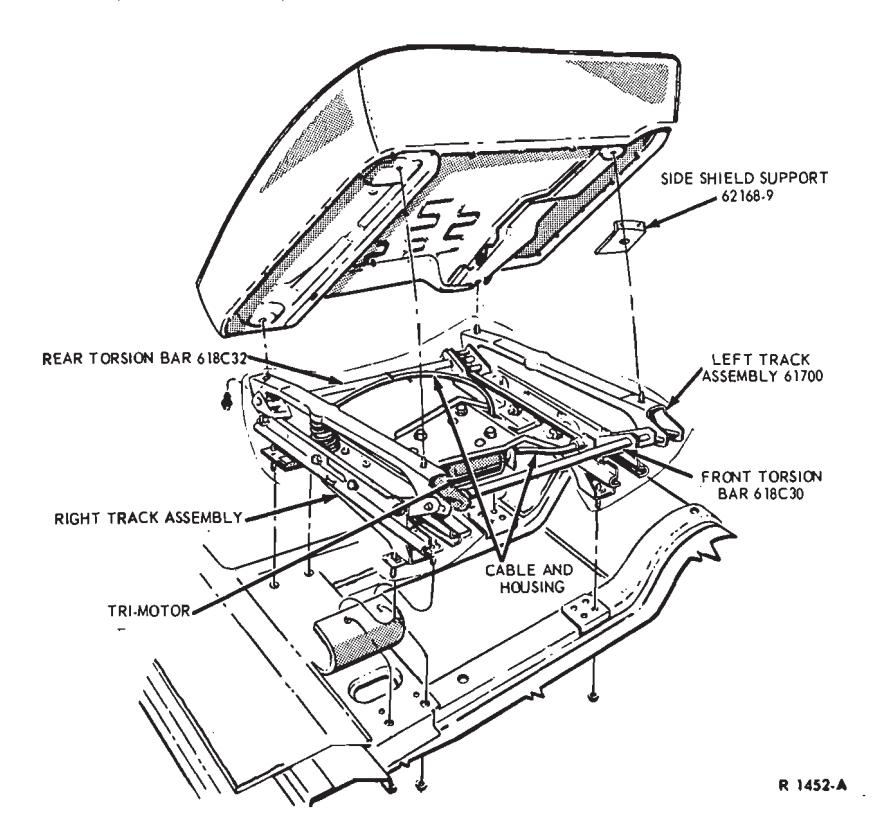
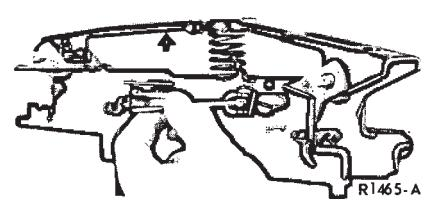
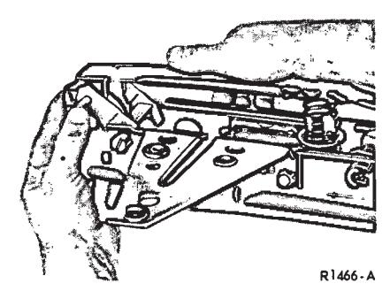
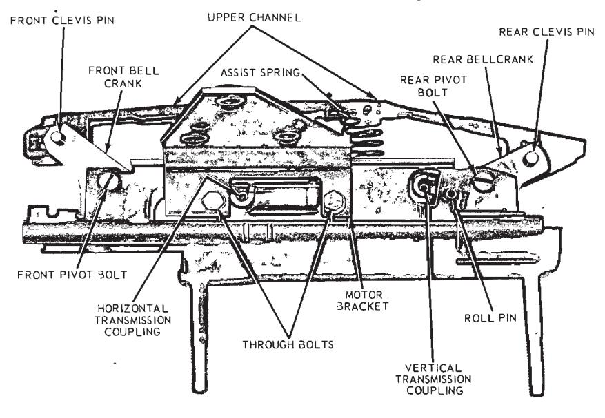
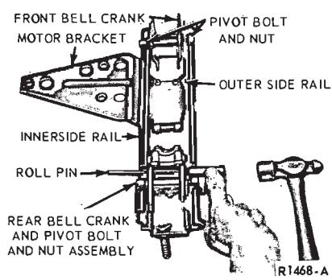
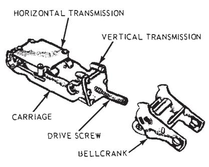
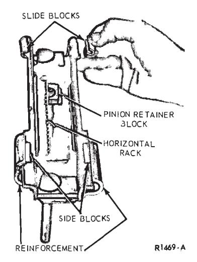
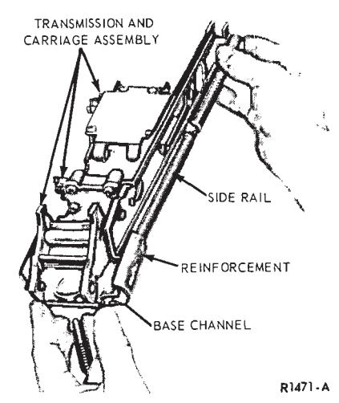
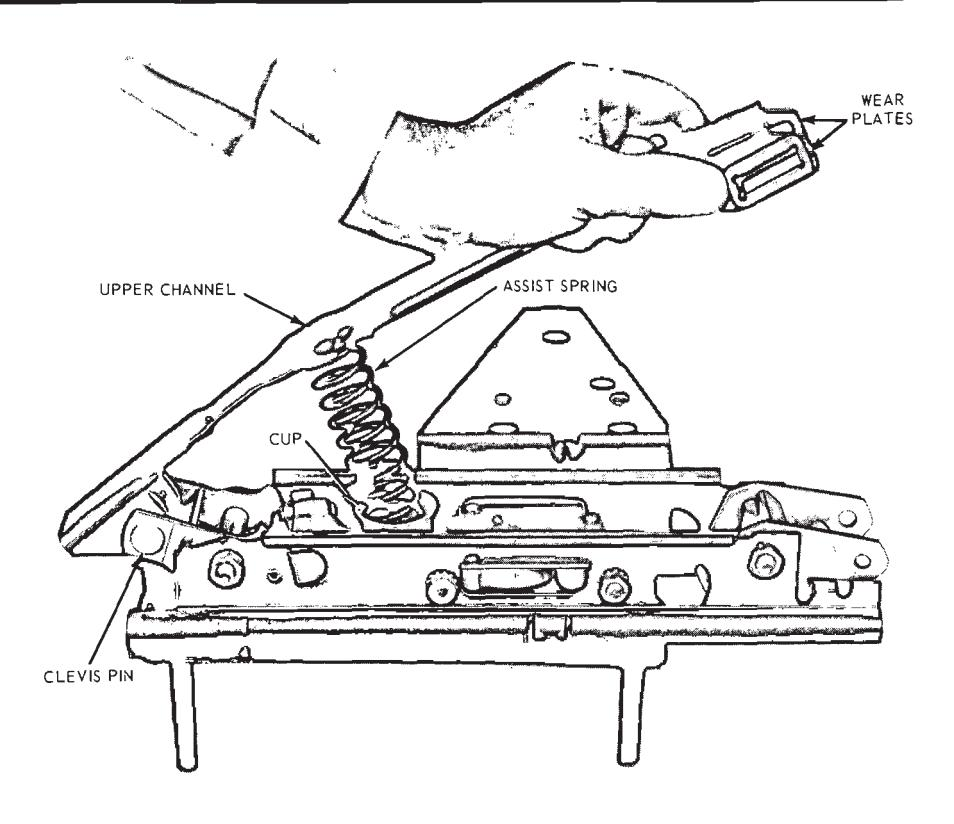

Seat Tracks · 41-04-06
Removal
-
Remove the nuts and washers retaining the seat track assembly to the floor pan (Figs. 6 and 7).
-
Lift the seat up enough to disconnect the seat motor wires. Then, remove the seat and track assembly from the vehicle.
-
Place the seat upside down on a clean bench and disconnect the switch wires at the connectors.
-
Remove the shield from the outboard side of the seat cushion.
-
Remove two bolts attaching each track to the seat frame and remove the track assembly from the seat.
SIX-WAY POWER SEAT TRACK TORQUES IN FT. LBS. SEAT TRACK TO CUSHION SCREWS CAR LINE BENCH BUCKET SPLIT BENCH FORD, METEOR, MERCURY 12-20 7-17 12-20 THUNDERBIRD - 12-25 _ CONTINENTAL MARK III _ - 12-25 LINCOLN CONTINENTAL 7-17 - 7-17 SEAT TRACK TO FLOOR PAN NUTS CAR LINE BENCH BUCKET SPLIT BENCH FORD, METEOR, MERCURY 9-15 12-25 9-15 THUNDERBIRD - 27-40 - CONTINENTAL MARK III _ _ 22-40 LINCOLN CONTINENTAL 20-30 _ 20-30 Fig. 8 — Six-Way Power Seat Track Torque Specifications
Installation
- Position the track assembly to the seat cushion. With a Thunderbird or Continental Mark III track, install the anti-squeaks and side shield support between the track and cushion (Fig. 7).
- Install the four track-to-cushion attaching screws and washers and torque as indicated in Fig. 8. To be sure that the two tracks are mounted in parallel, move the caged nut at the right front corner so that the distance between the tracks at the front equals that at the rear. Measurement should be made between the track base channels.
- Install the side shield to the seat cushion.
- Connect the switch wires to the track assembly at the connectors.
- Position the seat and track assembly in the vehicle and connect the wires at the connector.
- Install the seat track-to-floor pan retaining nuts and torque the nuts as indicated in Fig. 8.

Fig. 7 — Thunderbird and Continental Mark III Six-Way Power Seat — Typical of OthersMotor and Drive Cables
Removal
- Remove nuts and washers re- taining the seat track to the floor pan (Figs. 6 and 7).
- Lift the seat and disconnect the seat motor wires. Then, remove the seat and seat track from the vehicle.
- Remove three motor assembly to mounting bracket attaching bolts.
- Remove the clamps retaining the drive cables to the seat tracks. Then, open the wire retaining straps and remove the motor assembly and cables from the seat track assembly.
- Remove the cable retaining brackets and remove the drive cables from the motor assembly.
Installation
- Position the cables and retaining brackets to the motor and install the retaining screws.
- Position the cables to the seat tracks and the motor to the mounting bracket.
- Install the three motor-to-mounting bracket attaching bolts.
- Install the clamps retaining the drive cables to the seat tracks.
- Insert the motor wire in the wire straps and connect the wire at the connector.
- Position the seat and track in the vehicle and connect the wires.
- Install the seat track-to-floor pan retaining nuts and washers and torque as indicated in Fig. 10.
- Check the operation of the seat.
Right or Left Track
Removal
- Remove nuts and washers retaining the seat track to the floor pan (Fig. 7).
- Lift the seat up enough to disconnect the seat motor wires. Then, remove the seat and track assembly from the vehicle.
- Remove the right and left cushion side shields from the seat cushion.
- Remove the retaining clamps and disconnect the drive cables from the seat tracks.
- If the motor mounting bracket is attached to the track being replaced, remove the bracket-to-track screws and remove the bracket, motor and drive cables as an assembly. If the motor mounting bracket is not attached to the track being replaced, remove the three motor-to-mounting bracket screws and remove the motor and drive cables as an assembly.
- On bucket and split-bench seats only, remove the cotter keys and pivot pins that attach the front and rear torsion bars to the front and rear ends of each track respectively and remove the front and rear torsion bars.
- Remove the track-to-seat cushion frame attaching bolts and remove the track.
Installation
- Position the side shield support and then the replacement track to the seat frame (Fig. 7). Install the attaching bolts and washers and torque as indicated in Fig. 8.
- On bucket and split-bench seats only, assemble the rear torsion bar to the rear end of each track and the front torsion bar to the front end of each track with pivot pins and cotter keys.
- If the motor mounting bracket was attached to the track that was replaced, position the bracket, motor and drive cable assembly to the track and install the two bracket-to-track screws; otherwise, position the motor and drive cables and install the three motor-to-bracket screws.
- Connect the drive cables to the tracks and install the retaining clamps.
- Install the right and left cushion side shields.
- Position the seat and track assembly into the vehicle and connect the motor wires.
- Install the four seat track-to-floor pan retaining nuts and washers and torque as indicated in Fig. 8.
Track Components
To replace any component part of a seat track, remove the track as out- lined under Removal in the foregoing procedure and disassemble the track as far as required to replace the damaged part.

Fig. 9 — Turning Vertical Transmission to Up Position

Fig. 10 — Removing the Upper Channel
On each power seat assembly, only one track uses a vertical assist spring and cup assembly and is equipped with reinforcements at the base channels; also, the motor and mounting bracket is bolted to this track which, for the sake of distinction, is referred to as the primary track. The opposite track is referred to as the secondary track.
On Continental Mark III vehicles, the right track is the primary track. On all other vehicles, the left track is the primary track.
The illustrations used in the following procedures show the Continental Mark III primary (outboard) track on the passenger seat, but they are typical of both primary and secondary tracks on all of these car lines.
The vertical transmission is mounted at the rear end of a primary track but at the front end of a secondary track
Disassembly
-
The track upper channel must be in the full up position to provide clearance for removing both clevis pins. If the channel is not in the up position, insert the square end of the drive cable into the vertical transmission coupling and turn counterclock- wise (Fig. 9). If the vertical transmission is inoperative, insert the cable into the horizontal transmission coupling and turn counterclockwise to the full forward position (Fig. 11).

Fig. 11 — Primary Track Assembly — Continental Mark III, Typical of All -
With a primary track, hold the upper channel against the vertical assist spring while removing the front clevis pin (Fig. 10). Gradually release the pressure on the spring to allow the channel to swing up slowly, and then remove the rear clevis pin, upper channel and the assist spring and cup assembly (Fig. 11).
With a secondary track, remove the two clevis pins and then remove the upper channel.
-
Remove the roll pin from the rear end of the two side rails as shown in Fig. 12, and remove the front and rear pivot bolts and nuts.
-
With a primary track, remove the two through bolts and nuts that retain the horizontal transmission and motor mounting bracket to the side rails and remove the bracket (Fig. 11). Spread the side rails apart slightly and first slide the outer side rail (Fig. 12) forward and off the base channel assembly. Lift the transmission carriage and transmission assembly out of the base channel, and then lift the inner side rail from the base channel assembly.
With a secondary track, remove the two through bolts and nuts and the two side rails. Lift the transmission and carriage assembly out of the base channel.
-
Lift the horizontal transmission from the carriage, and turn the bell crank off the vertical transmission drive screw (Fig. 13).
-
If either transmission is binding or inoperative, remove the cover(s) and replace damaged parts as required (Fig. 13). If necessary, the vertical transmission can be separated from the carriage by removing the roll pin.

Fig. 12 — Disassembling Primary Track — Secondary Typical
Fig. 13 — Transmission Carriage Assembly
Fig. 14 — Base Channel Assembly
Fig. 15 — Installing Outer Side Rail on Base Channel — Primary Track
Assembly
-
Install the bellcrank to the vertical transmission by turning it onto the left hand threaded drive screw (Fig. 13). If the vertical transmission was removed or is being replaced, mount the new transmission to the carriage by installing the roll pin.

Fig. 16 — Installing Upper Channel and Assist Spring -
Install the horizontal transmission to the carriage.
-
Properly position the four horizontal slide blocks and the pinion retainer block on the base channel as shown in Fig. 14. The ridges on the blocks should index with the grooves on the channel.
-
Install the transmission and carriage assembly to the base channel making sure that the horizontal pinion engages with the horizontal rack and is retained by the retainer block.
-
With a primary track, first slide the outer side rail onto the base channel so that the rear end of the rail goes between the reinforcement and the channel as shown in Fig. 15. Then, slide the inner side rail onto the base channel with the rear end entering between the reinforcement and channel in the same manner.
Since the secondary track has no reinforcements on the base channel, the two side rails can be mounted to the base channel simultaneously.
-
Install the two through bolts and nuts that hold the motor bracket (pri- mary track), the horizontal transmission, and side rails together (Fig. 11).
-
Install the roll pin at the rear end of the two side rails (Fig. 12).
-
Install the (front on primary track, rear on secondary track) bell-crank between the side rails and secure with the pivot bolt and nut. Swing the opposite bellcrank (connected to vertical drive screw) into alignment with the bolt holes and install the pivot bolt and nut (Fig. 12).
-
Assemble the rear end of the upper channel to the rear bellcrank and install the clevis pin (Fig. 16).
-
With a primary track, install the vertical assist spring and cup assembly in the transmission carriage. The boss on the cup should enter the hole in the bottom of the carriage. Install the wear plates one on each side of the forward end of the upper channel. Be sure that the upper end of the spring fits into the spring seat in the upper channel, force the channel down against the spring and secure the forward end to the front bellcrank with the clevis pin (Figs. 11 and 16).
With an inboard track, install the wear plates and connect the forward end of the upper channel to the front bellcrank with a clevis pin.